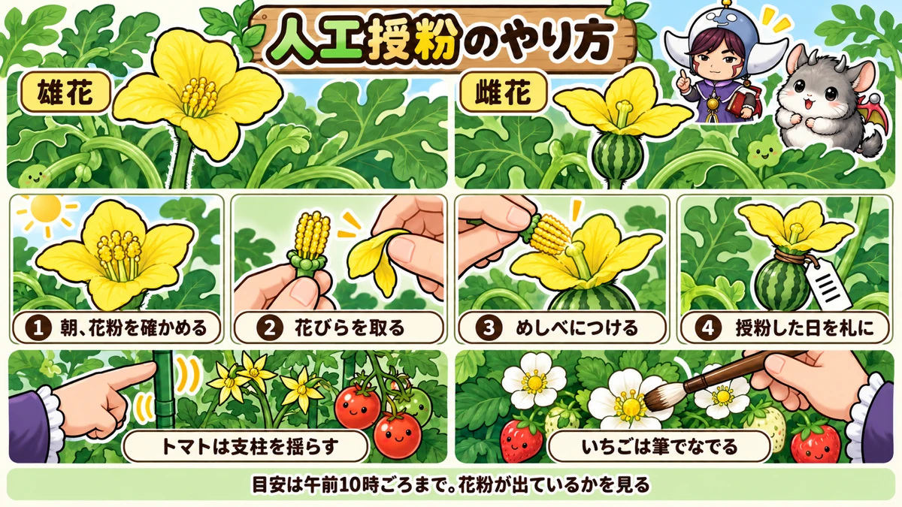

花は咲くのに実がならないの決定版｜トマト・きゅうり・なす・スイカ・枝豆で実がつかない原因と、受粉・肥料・水の見直し方
📖 この記事の目次
この記事で分かること
- 花は咲くのに実がならない原因は、大きく分けて3つです。肥料のやりすぎで葉や茎ばかり育っている、受粉がうまくいっていない、日照や水、栄養が足りない、の3つです。
- 葉が濃い緑で大きく茂り、茎が太く、背丈ばかり伸びているのに花や実が少ないときは、肥料、特に窒素のやりすぎを疑います。「つるボケ」「木ボケ」と呼ばれる状態です。
- スイカやメロンは、人工授粉をしたほうが確実です。トマトは、支柱を揺らすだけでも受粉を助けられます。
- なすやピーマンは、花の真ん中のめしべの長さで、株の元気さを見分けられます。
- 梅雨の長雨やくもりが続くと、花が落ちやすくなります。天気はどうにもなりませんが、水と肥料を切らさないようにして、株の体力を保ちます。
夏野菜を植えて、花がたくさん咲いた。これで実がたくさんとれる、と楽しみにしていたのに、いつまでたっても実がつかない。ついたと思ったら、小さいうちに黄色くなって落ちてしまう。株は元気そうなのに、なぜだろう。家庭菜園では、よくある悩みです。
この記事では、花は咲くのに実がならない原因を、野菜ごとに整理しました。原因が分かれば、次の手が打てます。今の株を立て直す方法と、次の年に同じことをくり返さないための準備まで、順番に書いていきます。
この記事の読み方
いま実がならなくて困っている人は、「まず株の姿を見る」と「野菜ごとの原因と対策」から読んでください。人工授粉のやり方だけ知りたい人は、「人工授粉のやり方」へ進んでください。
早見：実がならない3つの原因
- 肥料のやりすぎ（つるボケ、木ボケ）：葉が濃い緑で大きく茂る。茎が太い。背丈ばかり伸びる。花が少ないか、咲いてもすぐ落ちる。→ 追肥を止めるか減らす。水も控えめに
- 受粉ができていない：花は咲くが、実が太らずに落ちる。雌花の下の小さな実が、黄色くなってしなびる。→ 人工授粉。虫を寄せる。支柱を揺らす
- 日照、水、栄養の不足：梅雨のくもりが続いた、雨が降らない日が続いた、肥料が切れた。花や小さな実が落ちる。→ 水と肥料を切らさない。株の体力を保つ

なぜ実がならないのか
野菜には2つの育ち方がある
野菜の育ち方には、大きく分けて2つあります。ひとつは、葉や茎や根を大きくして、体をつくる育ち方です。もうひとつは、花を咲かせて実をつけ、タネを残す育ち方です。前者を「栄養成長」、後者を「生殖成長」と呼びます。
トマトやきゅうり、なすのような実を食べる野菜は、この2つを同時に進めながら育ちます。どちらか一方に傾きすぎると、うまくいきません。体ばかり大きくなって実がつかない、あるいは実ばかりついて株が疲れてしまう、ということが起きます。
養分がたっぷりあると、体づくりを優先する
土の中に肥料、特に窒素がたっぷりあると、野菜は「まだ子孫を残すより、体を大きくしよう」という方向に傾きます。葉や茎がどんどん茂り、花が少なくなったり、咲いても落ちたりします。これが、つるボケや木ボケと呼ばれる状態です。
花が咲いても、受粉しなければ実は太らない
多くの野菜は、花の中のおしべの花粉が、めしべの先につくこと（受粉）で、実が太りはじめます。受粉がうまくいかないと、雌花の下の小さな実は、太らずに黄色くなって落ちてしまいます。虫が少ない時期や、雨続きで花粉が飛ばない時期には、受粉がうまくいかないことがあります。
株に体力がないと、実を手放す
日照不足、水不足、肥料切れなどで株が弱っていると、野菜は、つけた花や小さな実を自分で落として、体を守ろうとします。花が落ちるのは、株からの「今は実を育てる余裕がない」という合図とも言えます。
まず株の姿を見る
肥料が多すぎるときの姿
- 葉が濃い緑色で、大きく、厚い
- 葉が内側に巻いたり、もこもこと波打ったりしている
- 茎が太く、節と節のあいだが長い
- 背丈ばかりどんどん伸びる
- 花が少ない。咲いても、実にならずに落ちる
- アブラムシや、葉を食べる虫が多い
肥料が多い株は、葉がやわらかく育つので、虫にも狙われやすくなります。虫が多いことも、手がかりのひとつです。
受粉ができていないときの姿
- 株は元気で、花もたくさん咲いている
- 雌花の下にできた小さな実が、太らずに黄色くなり、しなびて落ちる
- 花のまわりに、ハチなどの虫があまり来ていない
- まだ気温が低い時期や、雨やくもりが続いたあとに多い
体力が足りないときの姿
- 葉の色が薄い。下の葉から黄色くなる
- 茎が細い
- 花が小さい。花や小さな実がぽろぽろ落ちる
- 梅雨のくもりが続いた、雨が降らない日が続いた、追肥をしばらくしていない
野菜ごとの原因と対策
トマト：1段目の実を必ずつける
トマトは、いちばん下の花の房（1段目）に実をつけることが、とても大事です。1段目に実がつかないと、株が体づくりのほうに傾き、そのあとも実がつきにくくなる、と言われます。肥料のやりすぎと、1段目の実がつかなかったこと。トマトの実がつかない原因は、この2つが多いとされます。
トマトの花は、ひとつの花の中におしべとめしべがあり、花が揺れると花粉が落ちて受粉します。風がよく吹けば自然に受粉しますが、風のない日が続くと、うまくいかないことがあります。花が咲いたら、支柱を軽く揺らしたり、花房を指先でちょんちょんと揺らしたり、筆で花をなでたりすると、受粉を助けられます。
トマトの実をつきやすくする、植物ホルモンの薬剤もあります。花に吹きかけて使うものです。使う場合は、ラベルに書かれた使える野菜と、使う時期、回数を必ず守ります。
トマト：植えつけ前から肥料を控えめに
トマトは、もともとそれほど多くの肥料を必要としない野菜です。元肥をたっぷり入れすぎると、最初から体づくりに傾いてしまいます。元肥は控えめにし、1段目の実が太りはじめてから、様子を見て追肥をするのが基本です。
きゅうり：雌花がつかない、実が落ちる
きゅうりで実がつかないというのは、正確には、雌花がつかないか、雌花がついても実が太らずに落ちる、という状態です。雌花は、花の下に小さなきゅうりがついているので、すぐに分かります。
雌花がつかないときは、まず肥料のやりすぎを疑います。上のほうの葉ばかりわさわさと茂っていたら、追肥の量を減らします。たとえば、2週間に1回、1平方メートルあたり化成肥料30gほどを追肥していたなら、それを半分の量にして、1週間ごとに分けてやり、株の様子を見ながら調整する方法があります。
また、品種によっては、親づるに雌花がつきにくいものがあります。親づるだけを伸ばす育て方をしていて雌花が少ないときは、子づるを伸ばして、子づるの先に実をつけさせます。子づるや孫づるには、雌花がつきやすくなります。
雌花がついても、小さいうちに黄色くなって落ちるときは、日照不足、水不足、肥料切れが原因のことが多いです。きゅうりは水が大好きな野菜です。雨が降らない日が続いたら、たっぷり水をやります。
きゅうり：実が曲がるのも、同じ根っこ
実はつくけれど、曲がってしまう。これも、実がならない悩みと根っこは同じです。曲がる原因は、主に栄養不足と水不足です。水がないと、土の中の養分も吸えません。雨が降らない日が続いたら、バケツで何杯もやるくらい、たっぷり水をやります。マルチで土の表面が乾くのを防ぐのも効果があります。
もうひとつの原因は、実のつけすぎです。つるが多すぎて実がたくさんつくと、養分が分散して、ひとつひとつにうまく行き渡らず、曲がりやすくなります。子づるは、実を1〜2個つけたら、その先の葉を2枚ほど残して先を摘みとり、つるの数を整理します。
追肥をするときは、粒の肥料が葉の上にのらないように気をつけます。きゅうりの葉は細かい毛が生えていて、粒をはじかずに受けとめてしまいます。葉にのった肥料で、葉が傷むことがあります。きゅうりの根は広く浅く張るので、株元よりも、畝の肩のあたりにまくのがよいとされます。
なす、ピーマン：花のめしべを見る
なすやピーマンは、花を見ると、株の元気さが分かります。花の真ん中に、めしべが1本突き出ていて、そのまわりを黄色いおしべが囲んでいます。
- めしべが、おしべより長く飛び出している：株が元気な状態
- めしべが短く、おしべの中に引っこんでいる：肥料不足や水不足など、株が疲れている状態
めしべが短い花は、受粉しにくく、実にならずに落ちやすくなります。めしべが短い花が増えてきたら、追肥と水やりを見直し、実を早めに若どりして、株の負担を軽くします。反対に、葉がもこもこと巻いて色が濃く、茎ばかり太いときは、肥料が多すぎるサインです。
オクラ：木ボケ、葉ボケ
オクラは、肥料、特に窒素が多いと、株ばかり大きくなって、花芽がほとんどつかない「木ボケ」「葉ボケ」になることがあります。大きく茂っているのに実が少ないオクラは、この状態を疑います。
対策は、追肥を減らすか、しばらく止めることです。水やりも控えめにして、少しきびしい条件にしたほうが、花芽がつきやすくなると言われます。元肥が多すぎた場合は、すぐには直りませんが、株を健康に保って長く育てれば、後半にはいずれ花芽がついてきます。木ボケの株は葉が大きく、虫もつきやすいので、収穫した実より下の葉は切りとって、風通しをよくします。
オクラ：追肥は少しずつ、下の葉は切る
オクラの追肥は、株元に切れ目を入れて、鶏ふんなどを少しずつ入れる方法があります。1株あたり20ccほど、と紹介されることがあります。花芽がつかない株は、この追肥も控えて、様子を見ます。
収穫した実より下の葉は、切りとるのが基本です。木ボケで実がなかなかとれない株でも、下のほうの古い葉は同じように切っておきます。花が咲いてもすぐ落ちてしまう株でも、下葉を整理して風通しをよくしておくと、株が健全に保たれます。オクラの先端は繊細なので、アブラムシがついたら、指でこすらず、筆やはけで払い落とします。
枝豆、豆類：つるボケ
枝豆などの豆類は、根に「根粒菌」という菌がすみつき、空気中の窒素を取りこんで豆に渡してくれます。そのため、もともと多くの肥料はいりません。肥料を入れすぎると、背丈ばかり伸びて、花も咲かず、さやもつかない「つるボケ」になります。
つるボケの枝豆は、葉と葉のあいだの茎が長く伸び、草丈が1mほどになることもあります。また、窒素が多いと、カメムシなどの虫も寄ってきやすくなります。枝豆を植える場所には、前の野菜の肥料が残っていることもあるので、肥料は控えめにします。
枝豆：植える前に、土に肥料が残っていないか
枝豆を植える場所に、前の野菜の肥料がどのくらい残っているかを確かめる方法があります。土を少しとって水に溶かし、試験紙で窒素やリン酸、カリ、酸度を調べるキットが市販されています。
もし肥料がたっぷり残っていたら、すぐに抜く方法はありません。肥料を入れていない、庭のすみの土などがあれば、それを混ぜて薄める方法があります。長い目で見れば、肥料を吸う野菜を何作か育てて、少しずつ減らしていきます。
スイカ、メロン：人工授粉が確実
スイカやメロンは、ひとつの株に雄花と雌花が別々に咲きます。雌花の下には、小さなスイカやメロンがついています。虫が雄花の花粉を雌花に運べば実がつきますが、確実に実をつけるには、人工授粉をします。
人工授粉は、花粉が出ている朝のうちに行います。一般には、午前10時ごろまでが目安と言われます。ただし、天気や気温によって、花粉の出る時間は変わります。朝が寒くくもっていると、昼すぎになってから花粉が出てくることもあります。雄花のおしべを見て、黄色い花粉が出ているかを確かめてから行います。
スイカ：受粉の時期は、虫を追いはらわない
スイカの受粉がさかんになる時期は、花のまわりにハチやアリなど、いろいろな虫がやってきます。虫は、雄花と雌花のあいだを行き来しながら、花粉を運んでくれます。この時期は、虫よけや殺虫をひかえて、虫が来やすい環境にしておきます。受粉の時期を過ぎると株は少しずつ弱ってくるので、受粉させたい時期を逃さないことが大切です。
かぼちゃ：虫まかせでも実がつきやすい
かぼちゃも雄花と雌花が別々に咲きますが、花が大きく、ハチなどの虫がよく来てくれるので、虫まかせでも実がつきやすい野菜です。ただし、まわりに虫が少ない畑や、雨が続く時期は、人工授粉をしておくと安心です。
ズッキーニ：早い時期は人工授粉
ズッキーニも雄花と雌花が別々に咲きます。早い時期に植えたズッキーニは、まわりに虫が少なく、受粉がうまくいかないことがあります。虫が少ないところでは、午前中のうちに、雄花をとって、おしべを雌花のめしべにくっつけて人工授粉をします。
いちご：受粉が足りないと、形がいびつに
いちごは、受粉がうまくいかないと、実が大きくならなかったり、形がいびつになったりします。実の中心が黒ずんで、太らないこともあります。まだ寒い3月ごろに咲いた花は、虫が少ないので、受粉がうまくいく確率が下がります。この時期の花は、筆や、耳かきの後ろについている綿毛のようなもので、花の中心を軽くとんとんとつついて、人工授粉をします。暖かくなって虫が飛ぶようになれば、虫が受粉を助けてくれます。
いちご：受粉しなかった実は、早めに摘む
受粉がうまくいかなかったいちごは、実の中心が黒ずんで、大きくなりません。こうした実は、株の養分を無駄に使うので、早めに摘みとります。花を見て、まだおしべに黄色い花粉がたくさんついている花は、人工授粉ができます。おしべがすでに枯れている花は、人工授粉をしても間に合いません。
さつまいも：いもが太らないつるボケ
さつまいもは実ではなくいもを食べる野菜ですが、肥料が多すぎると、つるや葉ばかり茂って、いもが太らない「つるボケ」になります。さつまいもは肥料が少なくても育つ野菜なので、元肥は控えめにします。

花が咲く前にできること
実がならない悩みの多くは、植えつけの前と、最初の花が咲くまでの準備で減らせます。元肥を入れすぎない、日当たりと風通しのよい場所に植える、支柱を立てて株が倒れないようにする、の3つです。最初の花が咲いたら、受粉を手助けし、1番目の実を大事に育てます。最初の実がつけば、そのあとの花も実になりやすくなります。
人工授粉のやり方
雄花と雌花を見分ける
スイカ、メロン、かぼちゃ、ズッキーニ、きゅうりなど、うりのなかまは、雄花と雌花が別々に咲きます。雌花は、花の下（花のつけ根）に小さな実がついています。雄花には、それがありません。花のつけ根を見れば、すぐに見分けられます。
ただし、きゅうりは、受粉しなくても実が太る性質（単為結果）をもつ品種が多く、ふつうは人工授粉をしなくても実がなります。
手順
- 晴れた日の朝、その日に咲いた雄花を探す
- 雄花のおしべに、黄色い花粉が出ているかを確かめる
- 雄花をつけ根から摘みとり、花びらを取りのぞいて、おしべをむき出しにする
- その日に咲いた雌花の、真ん中のめしべに、おしべを軽くこすりつけるようにして、花粉をつける
- めしべ全体に、まんべんなく花粉がつくようにする
- 人工授粉した日を書いた札を、雌花のそばにつけておく
授粉した日を書いておくと、収穫の時期の目安になります。スイカやメロンは、授粉した日から何日目に収穫するかで、とりどきを決めるからです。
雨の日の人工授粉
雨の日は、花粉が濡れて固まり、受粉しにくくなります。雨が続く時期は、雨の上がった朝をねらって人工授粉をします。午後から雨になりそうな日は、花が乾いているうちに、早めに済ませておきます。
雄花がないとき
雄花と雌花が同じ日に咲かないこともあります。雄花が少ないときは、同じ種類の野菜であれば、となりの株の雄花を使ってもかまいません。
かぼちゃの人工授粉
かぼちゃで人工授粉をするときは、雄花をつけ根から摘みとり、花びらを取りのぞいて、おしべを出します。それを、雌花の真ん中のめしべに軽くこすりつけます。かぼちゃの花は大きいので、作業はしやすい野菜です。雌花は、花の下に小さなかぼちゃがついているので、すぐに分かります。
いちごの人工授粉
いちごは、ひとつの花におしべとめしべがあります。花の中央のふっくらと丸くなったところがめしべで、そのまわりの黄色いつぶつぶがおしべです。筆や、耳かきの後ろについている綿毛のようなもので、花の中心を軽くとんとんと数回つつくと、花粉がめしべにつきます。花のまんなかを、まんべんなくなでるようにするのがこつです。
トマト、なす、ピーマンは揺らす
トマト、なす、ピーマンは、ひとつの花におしべとめしべがあります。花を揺らして、花粉をめしべに落としてやれば受粉します。支柱を軽くたたく、花房を指でちょんちょんと揺らす、筆で花をなでる、といった方法で十分です。
虫に来てもらう
ハチなどの虫は、花粉を運んでくれる大事な味方です。受粉させたい時期には、花のまわりで殺虫剤や虫よけをむやみに使わないようにします。花のまわりに、虫を寄せる花を植えておく方法もあります。
肥料と水の見直し方
肥料が多すぎるとき
- 追肥をしばらく止めるか、量を減らす
- 水やりを控えめにして、少しきびしい条件にする
- わき芽や、込み合った葉を整理して、日当たりと風通しをよくする
- 実がひとつでもついたら、それを大事に育てる。実がつくと、株は実を育てる方向へ傾いていく
元肥が多すぎたときは、すぐには直りません。株の様子を見ながら、少しずつ実がつくのを待ちます。
肥料が足りないとき
- 葉の色が薄く、下の葉から黄色くなってきたら、追肥をする
- なすやピーマンで、めしべの短い花が増えてきたら、追肥と水を見直す
- 実をとり遅れると、株が疲れる。実は早めにとる
水が足りないとき
- きゅうりやなすは、特に水を多く必要とする
- 雨が降らない日が続いたら、朝のうちにたっぷり水をやる。株元にしみこむように
- マルチや敷きわらで、土の表面が乾きにくくする
日照が足りないとき
梅雨のくもりが続くと、どうしても花が落ちやすくなります。天気はどうにもなりませんが、込み合った葉やわき芽を整理して、少しでも日が当たるようにします。水と肥料を切らさず、株の体力を保っておけば、晴れてきたときに、また花が実になりはじめます。

見回りのチェック表
実がならない原因を早く見つけるために、週に1〜2回、次のことを見ておきます。
- 葉の色：濃すぎないか、薄すぎないか
- 葉の形：もこもこと巻いていないか
- 茎：太すぎないか、細すぎないか。節と節のあいだが長すぎないか
- 花：咲いているか。うりのなかまは、雌花が咲いているか
- めしべ：なすやピーマンで、めしべが飛び出しているか
- 小さな実：太っているか、黄色くなって落ちていないか
- 虫：花のまわりにハチなどが来ているか。葉にアブラムシなどが増えていないか
- 土：乾きすぎていないか、いつも湿りすぎていないか
- 最後の追肥：いつ、何を、どれだけやったか
追肥の日と量は、メモに書いておくと、多すぎたのか、足りないのかを判断しやすくなります。
次の年に向けて
元肥は控えめに
実を食べる野菜でも、元肥をたっぷり入れすぎると、最初から体づくりに傾きます。特に、トマト、枝豆などの豆類、さつまいも、オクラは、元肥を控えめにします。前に作った野菜の肥料が土に残っていることもあるので、前の年に何を育てたかも思い出しておきます。
トマトの追肥は、実がついてから
トマトの追肥は、最初の実が太りはじめてからにします（なす、ピーマン、きゅうりは、実がつきはじめたら肥料を切らさないようにします）。実がつく前から追肥をすると、体づくりに傾きやすくなります。
実がつきやすい品種を選ぶ
トマトには、受粉しなくても実がつく性質（単為結果性）を持つ品種があります。花が咲けば実がつきやすいので、受粉に手間をかけたくない人には向いています。ただし、実がつきすぎると、ひとつひとつが小さくなることもあるので、株の様子を見て、実の数を調整します。
植えつけの時期を守る
早く植えすぎると、気温が低くて虫も少なく、受粉がうまくいかないことがあります。植えつけの時期を守るか、早い時期に植えたときは、人工授粉をしてあげます。
肥料の要る野菜、控えめでよい野菜
実を食べる野菜でも、肥料の要る量はちがいます。同じように肥料をやると、ある野菜にはちょうどよく、別の野菜には多すぎる、ということが起きます。
- 肥料を切らさないほうがよい野菜：なす、ピーマン、きゅうり。実を長くとり続けるので、追肥を続けて株の体力を保つ
- 肥料は控えめでよい野菜：トマト、枝豆などの豆類、さつまいも。多すぎると、つるボケや実のつきにくさにつながる
- 肥料が多いと木ボケになりやすい野菜：オクラ。元肥を控えめに
同じ畝にいろいろな野菜を植えるときは、肥料の量を野菜ごとに変えるか、肥料の好みが近い野菜どうしを並べます。
季節ごとにやること（一般的な地域の目安）
- 3〜4月：植えつけ前の土づくり。元肥は控えめに。いちごの花が咲きはじめたら、虫が少ないうちは人工授粉
- 5月：夏野菜の植えつけ。トマトは1段目の花が咲いたら、支柱を揺らして受粉を助ける
- 6月：スイカやメロンの人工授粉。朝のうちに。授粉した日を札に書く。梅雨入り前に、わき芽や込み合った葉を整理
- 7月：梅雨明けまでは花が落ちやすい。水と肥料を切らさない。なすやピーマンの花のめしべを見る
- 8〜9月：オクラや枝豆の木ボケ、つるボケに注意。肥料を控える
説明が分かれるところ
人工授粉は必要か
スイカやメロンは、人工授粉が必要とする説明が多くあります。一方、かぼちゃは、花が大きく虫がよく来るので、人工授粉はしないという人もいます。まわりの環境や時期によって、虫の来かたはちがいます。実のつき具合を見ながら、必要なら人工授粉をする、と考えます。
水を控えるか、たっぷりやるか
つるボケや木ボケのときは水を控えめに、という説明がある一方、きゅうりやなすで花が落ちるときは、水をたっぷりと、という説明もあります。どちらも正しく、株の状態によって逆になります。葉が濃く茂りすぎていたら控えめに、葉の色が薄く株が弱っていたらたっぷりと、株の姿で決めます。
ホルモン剤を使うか、使わないか
トマトの実をつきやすくする植物ホルモンの薬剤は、確実に実をつけたいときに頼りになります。一方で、支柱を揺らしたり、筆で花をなでたりするだけでも十分に実がつく、という声も多くあります。まずは肥料の量と受粉の手助けを見直し、それでも実がつかないときに使うか考える、という順番がおすすめです。使うときは、ラベルの使える野菜、時期、回数を守ります。
よくある失敗
元気がないと思って、追肥をくり返した
つるボケの株は、見た目は元気でも実がつかないので、つい肥料が足りないのかと思って追肥をしがちです。葉が濃い緑で茂っているなら、肥料はむしろ多すぎます。
花の近くで、殺虫剤や虫よけをまいた
受粉を助けてくれるハチなどの虫まで遠ざけてしまいます。受粉させたい時期は、花のまわりでむやみに使わないようにします。
人工授粉を、昼すぎにした
暑い日の昼すぎは、花粉の元気がなくなっていることがあります。人工授粉は、花粉が出ている朝のうちに行います。
トマトの1段目の花を、なんとなく見送った
1段目に実がつかないと、そのあとも実がつきにくくなることがあります。1段目の花が咲いたら、支柱を揺らして受粉を助けます。
枝豆の畑に、前の野菜の肥料が残っていた
前に肥料をたくさん使う野菜を育てた場所では、肥料が残っていることがあります。枝豆は、元肥を入れずに植えてもよいくらいです。
よくある質問
花がたくさん咲いているのに、実がひとつもつきません
まず、葉の色と茂り方を見てください。葉が濃い緑で大きく茂っていたら肥料の多すぎ、葉の色が薄ければ肥料不足、株が元気なのに実が太らないなら受粉ができていない、と考えます。うりのなかまなら、雌花が咲いているかどうかも確かめます。雄花ばかり咲いていて、雌花がないこともあります。
きゅうりの花が、雄花ばかりです
きゅうりは、親づるの下のほうには雄花が多く、上のほうや子づるに雌花がつきやすい性質があります。まだ株が小さいうちは、雄花ばかりのこともあります。株が育つのを待ち、子づるを伸ばしてみます。
トマトの花が、花ごと落ちてしまいます
花のつけ根から、花がぽろりと落ちるときは、受粉ができていないか、株の調子がくずれているかのどちらかです。葉が茂りすぎて株の中が暗くなっていないか、梅雨のくもりが続いていないか、肥料が多すぎないかを見直します。花が咲いたら、支柱を揺らして受粉を助けます。
なすの花が、咲いてもすぐ落ちます
めしべの長さを見てください。めしべが短ければ、株が疲れているサインです。追肥と水やりを見直し、実をとり遅れていないか確かめます。
ピーマンの実が、だんだん少なくなってきました
実をたくさんつけたまま、とり遅れていると、株が疲れて花が落ちやすくなります。実は大きくしすぎず、早めにとって株の負担を軽くします。あわせて、花のめしべの長さを見て、短い花が増えていたら、追肥と水やりを見直します。枝が込み合っていたら、内側に向かう枝を整理して、株の中まで日が当たるようにします。
メロンも、人工授粉をしたほうがいいですか
メロンもスイカと同じく、雄花と雌花が別々に咲くので、人工授粉をしておくと確実です。子づるや孫づるに咲いた雌花に、その日の朝に咲いた雄花の花粉をつけます。授粉した日を札に書いておくと、収穫の目安になります。
つるボケは、いつ直りますか
元肥が多すぎた場合は、すぐには直りません。追肥を止め、水を控えめにして、株の中の肥料が使われるのを待ちます。オクラのように、時期が進むと花芽がついてくる野菜もあります。
スイカの雌花が、なかなか咲きません
株がまだ小さいうちは、雄花ばかり咲くことがあります。つるが伸びて、株が育つのを待ちます。肥料が多すぎて、つるや葉ばかり茂っているときは、追肥を控えます。
実がついたのに、途中で落ちてしまいます
受粉はできたけれど、株の体力が足りなかったか、実がつきすぎて養分が足りなかった可能性があります。水と肥料を見直し、つるやわき芽を整理して、ひとつひとつの実に養分が行き渡るようにします。
人工授粉をしたのに、実がつきませんでした
雄花の花粉が十分に出ていなかったか、雌花がまだ開ききっていなかったか、反対に咲いてから時間がたっていた可能性があります。その日の朝に咲いた雄花と雌花を使い、花粉が出ていることを確かめてから行います。雨の日は、花粉が濡れて受粉しにくくなります。
ゴーヤやかぼちゃも、雄花ばかりです
うりのなかまは、つるが伸びはじめたころは雄花が先に多く咲き、あとから雌花が咲いてくることがよくあります。まずは株が育つのを待ち、雌花が咲いたら、その日の雄花で人工授粉をしておくと安心です。
プランターでも、人工授粉はいりますか
ベランダなど、虫が来にくい場所のプランターでは、受粉がうまくいかないことが多くなります。トマトは支柱や花房を揺らし、うりのなかま（きゅうりをのぞく）は人工授粉をすると、実がつきやすくなります。
学ぶ：実がつくしくみ🔬
なぜ、窒素が多いと実がつかないのか
窒素は、葉や茎をつくるもとになる養分です。窒素がたっぷりあると、野菜は葉や茎をどんどん増やすことにエネルギーを使い、花や実にまわす分が少なくなります。さらに、葉が茂りすぎると、株の中まで光が届かず、花が落ちやすくなります。実をつけるには、窒素だけでなく、花や実をつくるのに使われる養分とのバランスが大切です。
なぜ、受粉しないと実が太らないのか
受粉すると、めしべの中でタネができはじめます。タネができはじめると、そこから実を太らせる合図が出て、株の養分が実に集まってきます。受粉しないとタネができず、合図が出ないので、実は太らずに落ちてしまいます。いちごのように、受粉しなかった部分だけが太らず、形がいびつになるのも、このためです。
なぜ、株が弱ると花を落とすのか
実を育てるには、たくさんの養分と水が必要です。日照不足や水不足で、光合成でつくれる養分が減ると、野菜はすべての実を育てる余裕がなくなります。そこで、つけた花や小さな実を自分で落として、残った実や、自分の体を守ろうとします。花が落ちるのは、野菜の生きのびるための知恵とも言えます。
なぜ、めしべの長さで株の元気さが分かるのか
なすの花は、まわりのおしべの先から花粉がこぼれ、まんなかのめしべの先に落ちて受粉します。めしべが長く、おしべより飛び出していれば、こぼれた花粉を受けとめやすくなります。株が疲れて、めしべが短くおしべの中に引っこんでしまうと、花粉を受けとりにくくなり、受粉しないまま花が落ちてしまいます。めしべの長さは、株の体力そのものを映していると言えます。
なぜ、実がつくと株は落ち着くのか
実がひとつつくと、株の養分は、その実を太らせるほうへ集まっていきます。すると、葉や茎ばかりを伸ばす勢いが少しずつ落ち着き、次の花も実になりやすくなります。トマトで1段目の実が大事だと言われるのは、最初の実が、株を「実をつける育ち方」に切りかえるきっかけになるからです。
まとめ
ここまで読んでくださって、ありがとうございます！
花は咲くのに実がならないときのポイントを、もう一度まとめておきます。
- 原因は3つ。肥料のやりすぎ（つるボケ、木ボケ）、受粉ができていない、日照や水、栄養の不足
- 葉が濃い緑で茂りすぎていたら、追肥を止め、水を控えめに
- トマトは1段目の実を必ずつける。支柱を揺らして受粉を助ける
- スイカやメロンは、朝のうちに人工授粉。授粉した日を札に書く
- なすやピーマンは、めしべの長さで株の元気さを見る
- 次の年は、元肥を控えめにし、追肥は実がついてから
花が咲いているのに実がつかない株があったら、まず葉の色と茂り方を見てください。そこから、肥料なのか、受粉なのか、体力なのかが見えてきます🍅
支柱
トマトは花が咲いたら、支柱を軽くたたいて揺らすだけでも受粉を助けられます。株を倒さず日を当てるためにも。
![[商品価格に関しましては、リンクが作成された時点と現時点で情報が変更されている場合がございます。]](https://hbb.afl.rakuten.co.jp/hgb/56d221a0.da732c49.56d221a1.b57a6709/?me_id=1230952&item_id=10017113&pc=https%3A%2F%2Fthumbnail.image.rakuten.co.jp%2F%400_mall%2Fnou-nou%2Fcabinet%2F5010356000109-01.jpg%3F_ex%3D240x240&s=240x240&t=picttext "[商品価格に関しましては、リンクが作成された時点と現時点で情報が変更されている場合がございます。]")

じょうろ
きゅうりやなすは水が大好き。雨が降らない日が続いたら、朝のうちに株元へたっぷりと。

敷きわら
株元に敷くと土が乾きにくくなり、水切れで花が落ちるのを和らげます。
![[商品価格に関しましては、リンクが作成された時点と現時点で情報が変更されている場合がございます。]](https://hbb.afl.rakuten.co.jp/hgb/56bc2fb2.ff40a6e6.56bc2fb3.618f6a70/?me_id=1257026&item_id=10000211&pc=https%3A%2F%2Fthumbnail.image.rakuten.co.jp%2F%400_mall%2Fsharuka%2Fcabinet%2F09042254%2Fimgrc0081094692.jpg%3F_ex%3D240x240&s=240x240&t=picttext "[商品価格に関しましては、リンクが作成された時点と現時点で情報が変更されている場合がございます。]")
次に読む
記事一覧へ